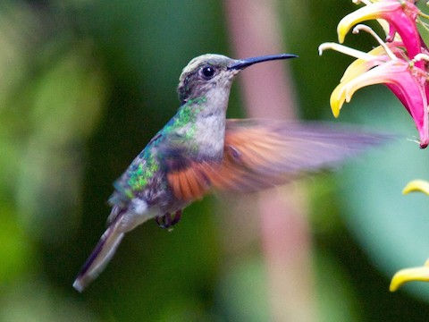
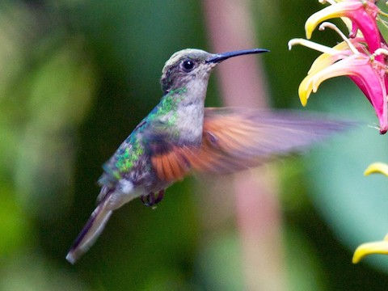

Colibríes
Los colibríes son pequeñas aves que destacan por su agilidad en el vuelo y sus vibrantes colores.
Estas aves, únicas del continente americano, son conocidas por su capacidad de batir las alas a gran velocidad, lo que les permite mantenerse suspendidas en el aire mientras se alimentan del néctar de las flores. Su papel en la naturaleza es crucial, ya que actúan como polinizadores esenciales en diversos ecosistemas.
 
